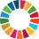
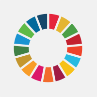

A shared blueprint
The SDGs are 17 interconnected goals that balance the three dimensions of sustainable development: economic growth, social inclusion, and environmental protection.

A universal call to action to end poverty, protect the planet, and ensure that by 2030 all people enjoy peace and prosperity. Adopted by all 193 UN member states in 2015, the SDGs are the world's shared blueprint for a better future.
2015
Year adopted
193
UN member states
17
Goals
169
Targets
The SDGs are 17 interconnected goals that balance the three dimensions of sustainable development: economic growth, social inclusion, and environmental protection.
Unlike their predecessors, the SDGs apply to every country — developed and developing alike — and call for action by all stakeholders: governments, business, civil society, and individuals.
The overarching principle is to reach the furthest behind first — eradicating poverty in all its forms and ensuring that progress benefits every person, everywhere.

The 17 Sustainable Development Goals — an integrated, indivisible set of global priorities for people and planet.
The SDGs are the result of decades of global conversations on sustainable development — a journey that began long before 2015.
The first global conference to link environment and development, producing Agenda 21 and setting the stage for future sustainable development frameworks.
Eight goals focused on poverty, education, gender, health, and environment — targeting developing countries with a 2015 deadline.
The UN Conference on Sustainable Development called for a new set of goals to succeed the MDGs — with a more universal and integrated approach.
On 25 September 2015, all 193 UN member states adopted "Transforming Our World: The 2030 Agenda for Sustainable Development" — 17 goals, 169 targets.
Keep — it's factual national context that a university center would reference
An updated and strengthened regulation reinforcing the roles of ministries, sub-national governments, and multi-stakeholder platforms in achieving the SDGs.
The 17 goals are organized under five transformative pillars — capturing the shared aspirations of people and planet, with justice and partnership holding it all together.
End poverty and hunger in all forms, ensure that all human beings can fulfill their potential in dignity and equality, and in a healthy environment.
Protect the planet from degradation — through sustainable consumption and production, sustainably managing natural resources, and taking urgent action on climate change.
Ensure that all human beings can enjoy prosperous and fulfilling lives, with economic, social, and technological progress occurring in harmony with nature.
Foster peaceful, just, and inclusive societies that are free from fear and violence — because there can be no sustainable development without peace, and no peace without sustainable development.
Mobilize the means required to implement the 2030 Agenda through a revitalized Global Partnership for Sustainable Development, based on a spirit of strengthened global solidarity.
Indonesia played an active role in shaping the 2030 Agenda and has been implementing the SDGs through an integrated, whole-of-government and whole-of-society approach since 2017.
Presidential Regulation No. 111 of 2022 governs SDG implementation, replacing the earlier Perpres 59/2017. It sets the roadmap, targets, and reporting mechanisms.
The SDGs Center at UNMAS contributes to this national framework by driving research, community service, and local advocacy in Bali and beyond.
All 38 provinces and 514 districts/cities have SDG Regional Action Plans, aligned with the National Action Plan and monitored through a dedicated regional reporting platform.
Over 54 SDGs Centers at universities drive research, community service, and local advocacy — bridging academia, government, and society.
Sustainable financing for the SDGs relies on mobilizing resources from multiple streams.
Public financing through national budget allocations across ministries.
Provincial and district/city budgets aligned with Regional Action Plans.
CSR programs, philanthropic foundations, and private sector contributions.
Civil society, religious organizations, and community-based initiatives.
A multi-level structure connects national leadership, cross-ministry coordination, technical working groups, and regional implementation.
Highest authority
Chaired by the President, providing strategic direction for SDG implementation.
Coordination
Led by Bappenas, harmonizing policies and programs across ministries.
Technical
Thematic groups covering each pillar, targets, and indicators.
Secretariat
Day-to-day coordination, monitoring, reporting, and stakeholder engagement.
Data & Reporting
Managed jointly with BPS to compile, verify, and publish indicators.
Sub-national
38 provinces and 514 districts/cities implementing Regional Action Plans.
Multi-stakeholder
Universities, civil society, private sector, and philanthropic partners.
Five principles shape how the SDGs are designed, implemented, and monitored — everywhere.
Every person — regardless of identity, income, or geography — must benefit from development progress.
The goals apply to every country — developed and developing — with differentiated responsibilities and capacities.
Economic, social, and environmental dimensions must advance together — not trade off against each other.
Real transformation depends on collaboration — governments, businesses, civil society, academia, and communities.
Transparent monitoring, open data, and periodic reporting — nationally and globally — keep the agenda on track.
Dive into the details of each goal, or track Indonesia's national progress through interactive data dashboards.